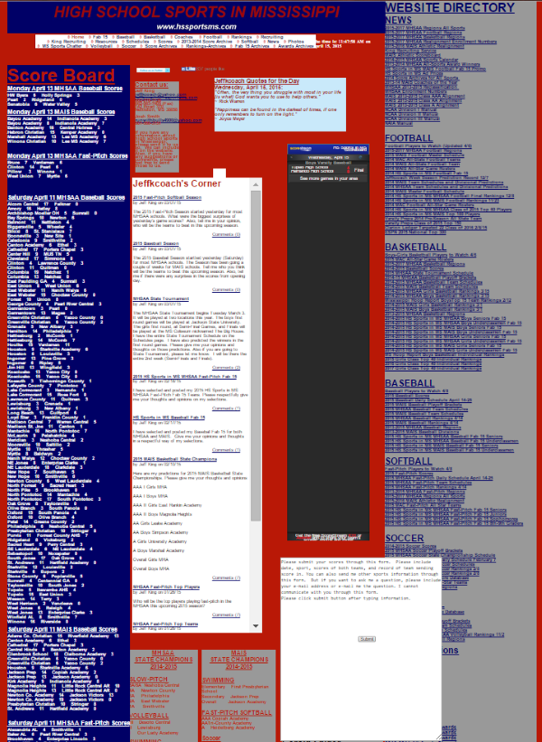
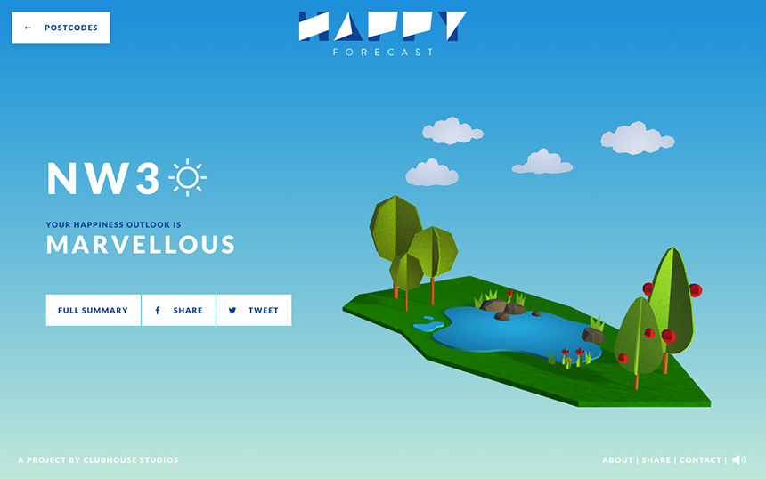

Animations on the Web with
Greensock
Animation : from the Latin word Anima, meaning Soul
See the Pen GreenSock
codepen.io/ihatetomatoes/pen/jbPpRz
1. Why are animations important?
Misconception : animations are just to inject fun.
Reality : enhances usability and adds features.
Directing attention.
Look at ME!
Interactivity becomes intuitive.
Data visualisation.


Smoothing out the inner workings.
2. Why use GSAP?
Handles transform inconsistencies across browsers.
Animate CSS
Simplest tools for 90% of functionality.
Incredibly powerful with SVGs.
Why SVGs are better than images.
Staggering and arrays.
Timelining.
3. Getting to know Greensock.
How it's put together.
Design and development philosophies.
"Design everything first and slowly unveil things."
4. Animations that put the web first.
Interraction from users
Responsiveness
5. Incorporating GSAP into your projects
CDNs
Minified files
- TweenLite (9kb)
- TimelineLite (4kb)
- EasePack (2kb)
- Draggable (12kb)
6. How to make animations work for you.
Animations are the new infographic.
Small files, big capture.
Tutorials and walkthroughs.
7. Examples of sites using Greensock.
http://www.locus-solus.it/en 2D Stuff
http://www.weareuprising.com/menu 3D Stuff
Resources:
GSAP Docs
https://greensock.com/docs/#/HTML5/
GSAP Cheatsheet
https://ihatetomatoes.net/wp-content/uploads/2015/08/GreenSock-Cheatsheet-2.pdf
Codepen
http://codepen.io/sdras
http://codepen.io/ihatetomatoes
http://codepen.io/chrisgannon
http://codepen.io/GreenSock/
Video links
https://w ww.youtube.com/watch?v=ZNukcHhpSXg
Timelines in Greensock